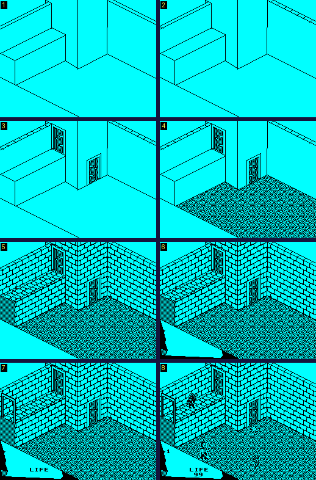
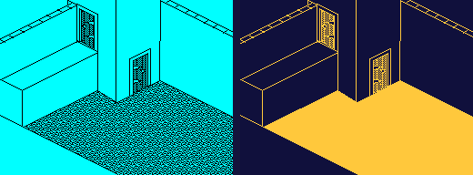
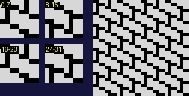
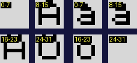
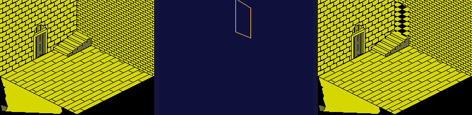

| How a room is drawn |
A room in Fairlight is not stored as a picture. It is a short program for a little drawing machine: points, lines between them, textured flood fills, shared pieces called parts, and at the end a list of the objects the room holds. The game runs it each time the knight walks in. There are 81 rooms (ROOM1 on) and 56 parts (PART1 on), each record a length word and its commands, a room's with a colour byte first; drawing every room once carries out 10,950 commands. This page follows the drawing machine through a room, the start room 29, with pictures taken by stopping the game's own interpreter along the way.
DRAW_CURRENT_ROOM finds the room by walking the table from room 1, each record's first word its length; it sets the drawing's variables from ROOM_DEFAULTS (both points at 50, 50, the origin at 0, no mode bits) and calls DRAW_ROOM_RECORD. That clears the screen with black ink on black paper (CLEAR_ROOM_SCREEN), so the room is drawn unseen, keeps the colour byte, and carries out the commands one at a time (DO_ROOM_COMMAND, and MORE_ROOM_COMMANDS for the rarer ones) until the $E5 that ends them. A part is run by the same loop, recursively, so parts can draw parts. The commands, how many of each the rooms and parts hold, and how many are carried out when every room is drawn once:
| Code | Bytes | What | In the data | Carried out |
|---|---|---|---|---|
| $00-$BF | 2 | a point: the byte a row (counted up from the bottom), the next a column; with the mode bits, a line to it | 948 | 5600 |
| $C0 | 3 | the second point | 180 | 794 |
| $C1-$CE | 1 | the mode bits on and off (below) | 269 | 1257 |
| $CF | 1 | the second point to the point | 27 | 126 |
| $D0 | 1 | the two points swapped | 3 | 36 |
| $D2 | 1 | a line from the second point to the point | 12 | 57 |
| $D5 | 2 | repeat what follows, up to $D6, n times | 17 | 72 |
| $D6 | 1 | the end of the repeat | 17 | 682 |
| $E0 | 2 | draw part n, which may change the drawing's state | 136 | 267 |
| $E1 | 2 | draw part n, keeping the state | 116 | 154 |
| $E2 | 1 | copy the screen into the clean copy | 48 | 232 |
| $E4 $00 | 2 | clear the clean copy; lines go into it | 2 | 5 |
| $E4 $01 | 2 | lines onto the screen again | 2 | 5 |
| $E4 $04 | 2 | object mode: place the object table's things, and the rest is objects | 56 | 189 |
| $E4 $05 | 5 | place the table's things, and move the origin | 34 | 94 |
| $E6-$FF | 1 | a textured flood fill from the point | 212 | 750 |
| (object mode) $00-$E3 | 5 | an object: its type, +12 and its place | 154 | 551 |
| (object mode) $E6 up | 1 | a patch: the room's floor, ceiling and walls | 33 | 79 |
Codes $D1, $D3, $D4, $D7-$DF and $E3 match nothing and do nothing. Of the mode codes, $CE is in no room or part. The point is a row and a column with the row counted up from the bottom of the screen, and rows go round modulo 192. The mode byte (IY+$6B) decides what a point does:
| Bit | Codes | What |
|---|---|---|
| 0 | $CB, $CC | lines clear pixels instead of setting them |
| 1 | $CD, $CE | lines flip pixels |
| 2 | $C3, $C4 | after each point the second point moves to it, so that lines join up |
| 3 | $C5, $C6 | the second point moves along with the first |
| 4 | $C1, $C2 | points are relative: added to the point before |
| 5 | $C7, $C8 | a line from the second point to each new point |
| 6 | $C9, $CA | columns mirrored: the drawing is flipped left to right |
| 7 | $E4 $04 | object mode, to the end of the room or the part |
With bits 2 and 5 on, a run of points is a polyline: each point draws a line from the last and becomes the start of the next. Bit 4 with bit 3 makes a pattern that can be moved about and repeated; bit 6 lets one part serve for a left-hand and a right-hand copy of a thing.
Room 29, the room a new game starts in, has 82 commands of its own; with its parts and its repeat, the interpreter carries out 185. When this page was built the game drew it, stopping before every command to note which one it was about to carry out: the order was exactly the one this listing lays out in the room's entry and its parts'. The same was checked for every room from 2 to 80, the title's included (room 1, GAME OVER's backdrop, has no commands at all, and 81 is the end of the quest). The screen at a few of those stops:

Room 29 drawn by the game's own interpreter, stopped along the way: 1, the outline: 32 commands, points joined by lines; 2, part 25, and a repeat of relative points; 3, part 6, a door, drawn twice, the second time mirrored (mode bit 6); 4, $E2 kept a clean copy; the first fill; 5, the rest of the fills; 6, part 17: the panel; 7, the room's drawing done and its doors and still things drawn into it, at the start of the first pass; 8, at the start of the second, everything that moves drawn by the first and the room coloured. Until then the attributes are black on black, and the pictures before 8 are shown in the room's colour.
The drawing ends with the objects: $E4 $04 turns object mode on, the object table's things for the room are placed (PLACE_ROOM_OBJECTS), and what follows is the room's own list -- a patch code, then objects of its own. Then ROOMST copies the bare room to the clean copy, and DRAW_STILL_THINGS draws each door and each still object into it and copies it again, so that they too are part of the background. The first pass of the main loop draws everything that moves, and after it ATTRI puts the room's colour on all 768 attribute bytes at once: the room appears complete.
$D2, and every point while mode bit 5 is on, draws a line from the second point to the point, both ends included (DRAW_LINE, in MORE_ROOM_COMMANDS). It is Bresenham's: a step along the longer distance at every pixel, and one along the shorter whenever the running error passes the longer, with the screen address stepped a line or a pixel at a time rather than worked out afresh. The pen sets the pixel, or clears it (mode bit 0), or flips it (bit 1) (PLOT_LINE_START). Only room 26 flips, for its last line, which crosses a wall that is textured already: drawn by the game with its $CD turned into a code that does nothing, 36 pixels of the room came out different, all along that line.
Codes $E6 to $FF fill the area round the point with one of 26 textures (TEXTURES on, 32 bytes each; 14 of them are used by some room or part). The fill (FILL_NEXT_SEED, FILL_NEXT_PIXEL) is a span fill with the machine stack as its list of runs still to do: from a place taken off the stack it goes right to the end of the run, then paints leftwards a pixel at a time, and pushes a place in the row above or below whenever a clear run begins there. What bounds it is not the screen but the clean copy at $C000, 32 KB above the screen and laid out like it: a pixel set there stops the fill, and every pixel the fill paints is set there, so nothing is painted twice. The screen only receives the texture, which replaces whatever was there.

After the first fill of room 29: the screen (left), in the room's colours, and the clean copy at $C000 (right), which the fill works against, in this page's own colours -- a set pixel orange on dark blue -- since it has none. $E2 copied the outline there; the fill marked every pixel it painted, so the painted area is solid in the copy while on the screen it has the texture.
Room 29's drawing runs 13 fills, 9 of its own and the rest in its parts. When this page was built they took 950 runs off the stack and painted 39,739 pixels -- exactly as many as the clean copy gained -- 8,731 of them one at a time and 31,008 eight at a time, in 3,876 whole bytes. The whole bytes are FILL_WHOLE_BYTE's: when the fill steps into a new byte, and all eight pixels are clear in the clean copy and the rows above and below are each the same all along it (clear where a run is open there, set where none is), nothing in the byte can change the fill's course, so it marks and paints all eight at once. On a room's big plain areas that is most of the work: here 78% of the pixels.

Texture 6 (fill code $EC, TEXTURE6): its 32 bytes as the four cells the fill reads, labelled with their bytes (left), and laid as the fill lays it, two tiles each way (right), black ink on white paper. Its bricks are 16 pixels long, which is what the left and right cells are for; its top and bottom pairs happen to be the same.
A texture is a 16 by 16 tile in four 8 by 8 cells. Which cell a pixel takes depends on the screen, not on the fill: bit 3 of its row picks the top or bottom pair, bit 3 of its column the left or right cell, and the row within the character row the byte. So the pattern lines up with the character cells, and with the colours, whatever the area's shape, and two fills of one texture meet without a seam. Ville Krumlinde's disassembly has bytes 0-15 as the rows of even character rows and byte n as pixel row n; the code (read at $E787-$E7A7) makes bytes 8-15 the right-hand cell of the same rows, and the bricks drawn that way come out whole. Only 14 of the 26 textures are ever used, and two of the others are not patterns at all, but letters.

Textures 22 (TEXTURE22) and 23 (TEXTURE23), which no room fills with, drawn the same way: the Swedish capital and small letters with a ring and with dots, one cell of each blank.
$E2 copies the screen into the clean copy, so that what has been drawn so far bounds the fills that follow. $E4 $00 does something cleverer: it clears the clean copy and sends the lines that follow into it instead of onto the screen, where they bound a fill without ever being seen; $E4 $01 sends them back. Room 2 uses the pair to lay a second texture over part of a wall that is already textured -- which a fill against the ordinary clean copy could not do, since the wall's own bricks would stop it at once.

Room 2: the screen when $E4 $00 has cleared the clean copy and the outline has been drawn into it (left: the screen has not changed); the clean copy then (middle: only the outline, orange on dark blue as above); and the screen after the fill inside it (right), which lays a second texture over part of a wall that is textured already.
Drawn by the game with its $E4 $00 and $E4 $01 turned into $E4 $02, which does nothing, room 2 came out 676 pixels different: the clean copy was never cleared, the fill found its first point already set, and the panel on the wall is not there. Part 16 does the same.
$E0 n and $E1 n draw part n in the middle of the room's commands and come back. $E1 saves the drawing's state -- both points, the mode, the repeat and the origin -- and puts it back afterwards; $E0 lets the part change it. Either way object mode ends with the part. $D5 n repeats what follows up to the $D6 n times; there is one repeat count, so repeats do not nest. $E4 $05 moves the origin that object mode adds to every object it places: room 17 repeats a part four times, moving the origin each time, and so puts down four pairs of objects in a row. Both $E4 $04 and $E4 $05 first place the object table's things, once in each drawing (bit 0 of IY+$3C), with the origin still at 0.
Records 1 to 6 (FIXED_RECORDS) are the room's floor, ceiling and four walls for the collision code: huge boxes with no sprite. A patch code in the room's object list (PATCH_RECORDS) sets them from the table of patches (PATCHES): the floor's top, the ceiling's, the two walls across +6 and the two across +8. Every room the knight plays in has one, in its own list or a part's; the codes in use:
| Code | Floor's top | Ceiling's top | Record 3's +6 | Record 4's +6 | Record 5's +8 | Record 6's +8 | Rooms |
|---|---|---|---|---|---|---|---|
| $E6 | 50 | 180 | 178 | 40 | 40 | 174 | 2, 7-8, 13, 20, 28-34, 41, 47-51, 61, 71-72 |
| $E7 | 50 | 180 | 232 | 40 | 94 | 174 | 15-19, 21, 25-27, 39-40 |
| $E8 | 50 | 180 | 144 | 40 | 74 | 174 | 14, 22-24, 56, 68-69 |
| $E9 | 50 | 120 | 112 | 40 | 40 | 174 | 10-11, 35-38, 70, 73, 78 |
| $EB | 50 | 180 | 130 | 40 | 90 | 174 | 53-55, 57-60, 64-67, 77 |
| $EC | 50 | 120 | 80 | 40 | 66 | 174 | 42, 75 |
| $ED | 50 | 180 | 154 | 40 | 68 | 174 | 43 |
| $EE | 50 | 100 | 154 | 40 | 144 | 174 | 44, 63, 76 |
| $EF | 50 | 180 | 152 | 40 | 40 | 178 | 45 |
| $F0 | 50 | 180 | 176 | 40 | 40 | 134 | 46 |
| $F1 | 50 | 180 | 80 | 40 | 104 | 174 | 52 |
| $F2 | 50 | 180 | 40 | 222 | 136 | 174 | 62 |
| $F3 | 50 | 180 | 40 | 130 | 40 | 174 | 64 |
| $F4 | 50 | 180 | 188 | 40 | 64 | 194 | 3 |
| $F5 | 50 | 180 | 230 | 40 | 120 | 174 | 6, 74 |
| $F6 | 50 | 180 | 118 | 60 | 40 | 184 | 4 |
| $F7 | 50 | 180 | 170 | 44 | 46 | 224 | 5 |
| $F8 | 10 | 180 | 178 | 40 | 40 | 174 | 9, 12 |
| $F9 | 50 | 230 | 80 | 40 | 140 | 174 | 80 |
So nearly every floor is at 50, the height the knight's feet are at when he stands on it. Room 29's is patch $E6, and its six records, read in the running game, hold exactly those values. The two rooms with a floor at 10 are the rooms with pits. None of this is drawn: what the knight bumps into is these boxes, and the boxes the room's objects make, never the lines of the picture. How they are used is on the movement page.
PLACE_ROOM_OBJECTS walks the whole object table (OBJECTS) for entries in this room, and PLACE_OBJECT makes each one's record at the next free one: from its type's template (TEMPLATES) the sprite, where the sprite goes on the screen, its sizes, its starting state and its weight; from the entry its kind and its place. A thing gets its number in the table at +19, so that its room can be written back when it is carried off. The room's own objects, after $E4 $04, are made the same way from five bytes each.
A template's screen place is right for an object standing at 50, 50 on a floor at 50 -- its top at 50 plus its height -- so the record is first put there and ISO_MOVE moves it to the place asked for, moving the sprite with it: a step along +6 is a pixel right and half a row up, along +8 a pixel left and half a row up, and up +7 a row up. Worked through for record 8 of room 29, the object table's thing 14 (type 32, at 140, 54, 110): its template puts the sprite at x 114, y 13; the move adds 90 along +6, 60 along +8 and 0 in height, so x 114 + 90 - 60 = 144 and y 13 + 45 + 30 + 0 = 88 -- where the game put it.
The most records a room makes is 37 (room 71), the six fixed ones and the knight's among them; the area from RECORDS holds 43.
Ville Krumlinde's disassembly has the interpreter's structure and most of its names right. Where this page differs: the texture format (above); his "solid" texture $E8 is vertical stripes; $E0 is not a jump but a call, and rooms go on drawing after it; the bytes after $E4 $05 are the objects' origin; and the patch codes set six bytes of the room's own box records, not a shared byte of the object table's records.